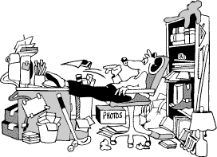
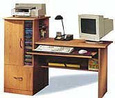

|
THE
5S FIRST AUDIT
by: Albert
Gavino
The
first audit for 5S has already began, Desks, tables, cabinets,
files, and other work areas were checked for 5S compliance.
Unfortunately,
some were caught unprepared. This gave awareness to employees,
co-employees and top management to be organized with their
office space. If you got organized office space, then most
probably you get to organize and plan your work more effectively.
Lets work together and keep the 5S practice going. It not
only organizes your desk, but organizes your work and your
life too.
Keep
your workplace away from clutter. It would definitely make
you feel better and make work easier
Five
Keys to an Organized Work Space
Compartmentalize
Since
a significant amount of time is spent sitting behind a desk
or in front of a computer, design your work area so that there's
a place for everything and that the telephone, note pads,
pens, pencils and appointment book are at your fingertips.
Place additional resources - but only those that are essential
- within easy reach. This will minimize movement and allow
you to be more productive.
De-clutterize
To
prevent unnecessary clutter - and wasted time - limit the
amount of items on your desk. Also, keep only current files
on your desk, placing all other onto Rolodex cards and note
deadlines from meetings and telephone conversations on a calendar.
This will prevent little scraps of paper from piling up on
your desk.
Categorize
Categorize
files into two categories: active and inactive. Keep active
files accessible and store inactive files in a labeled storage
box. This will reduce time spent rummaging through a huge
stack of files that may not be current.
Utilize
Don't
forget to utilize the often wasted space available behind
the door or vertically on your desk. Using products such as
wall-mounted grids or behind-the-door hanging storage racks
to hold file folders, desk accessories, magazines or videotapes
will truly optimize limited work space.
Minimize
Reading
a document over and over can waste valuable time. Minimize
the number of times a document is read by immediately filing,
discarding or placing the items in a "to do" file.
The amount of paperwork on your desk will be reduced by making
this a part of your daily routine.
|